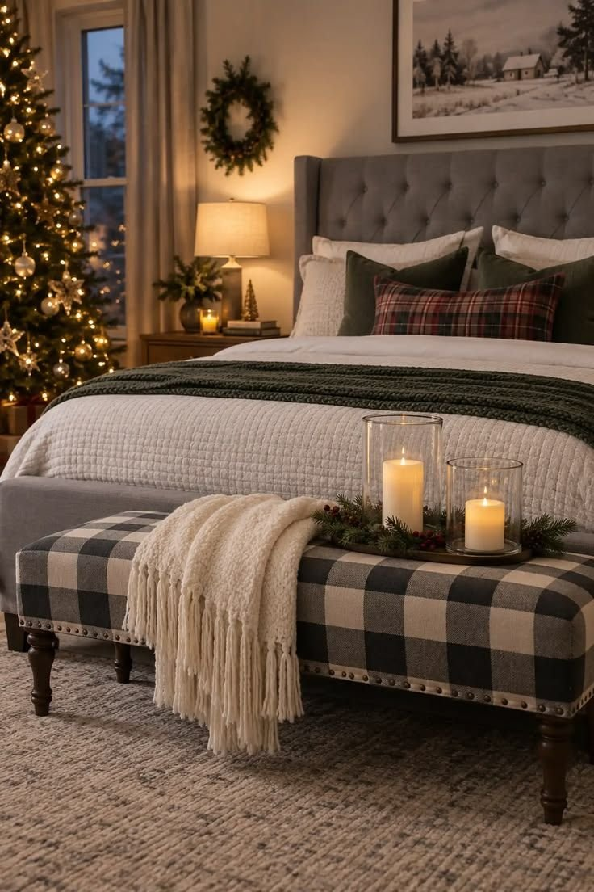
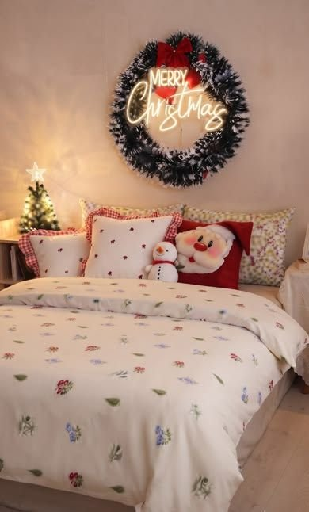
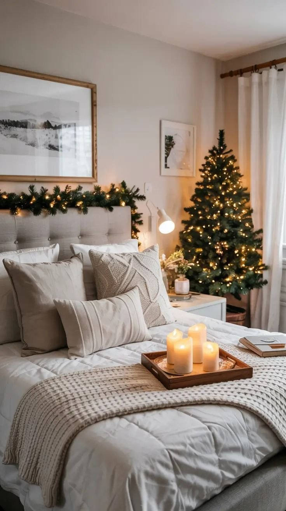
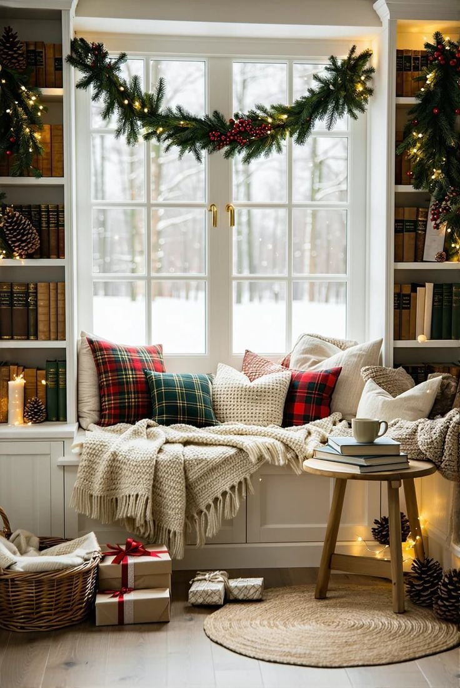
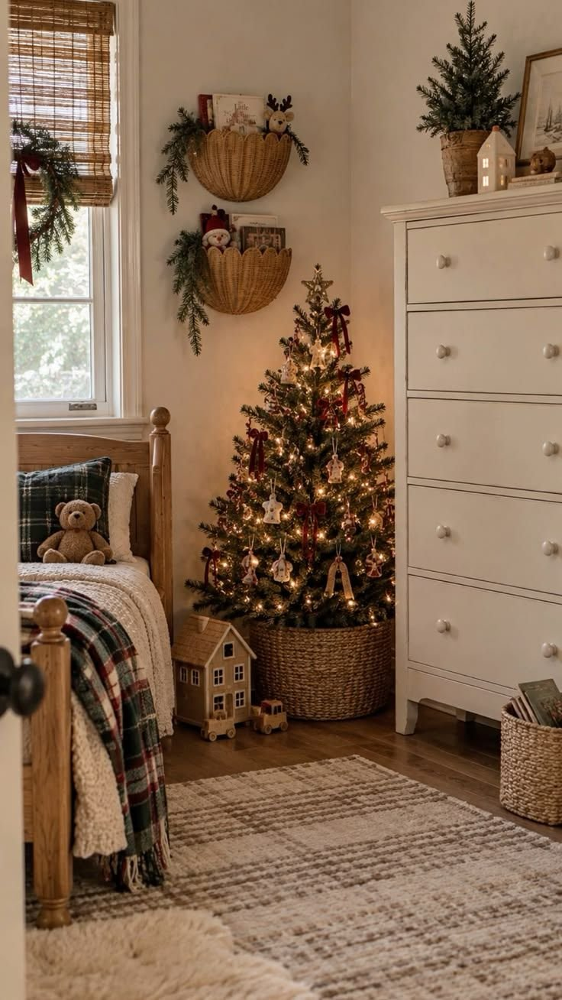
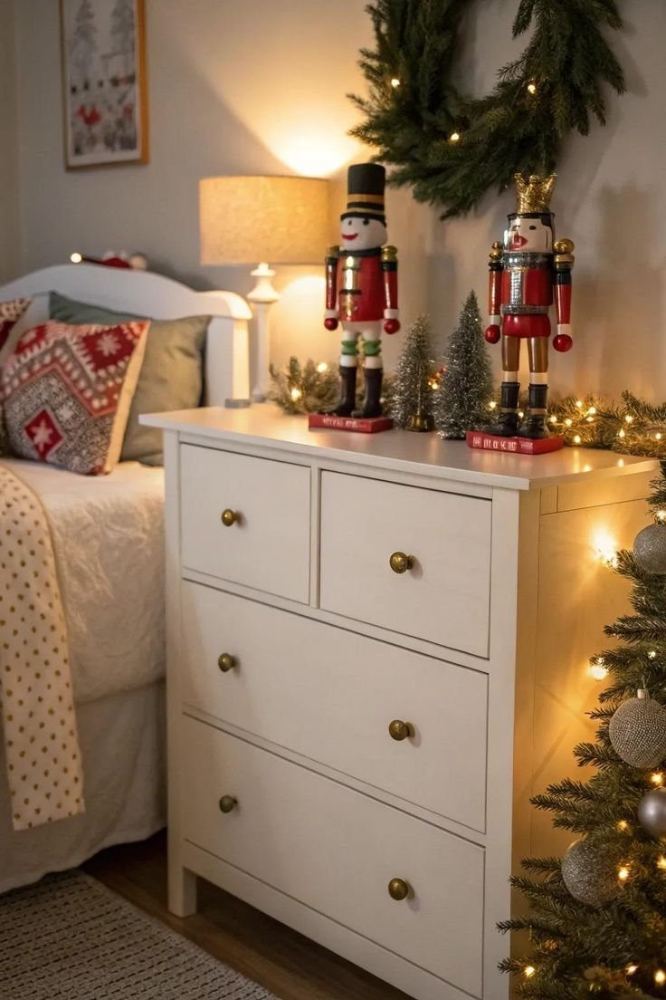
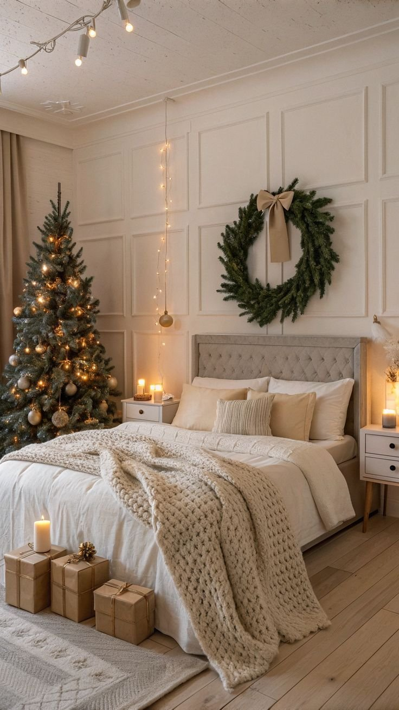

A bedroom rarely gets the same holiday attention as a living room or entryway, even though it's where the day actually starts and ends.
A few considered touches, a wreath, some warm lighting, a seasonal throw, can turn it into a genuine holiday retreat without any major overhaul.
The goal isn't to recreate a department store display. A handful of well-chosen pieces, layered thoughtfully, will always read as more intentional than a bedroom covered in every seasonal item available.
Twenty-two ideas are laid out below, running from a single statement piece all the way down to a full room refresh, so there's a sensible starting point whether you've got an afternoon or an entire weekend to spend on it.

9 ft Norfolk Pine Christmas Garland, Real Touch
Shop on Amazon9 ft Cedar Christmas Garland for Mantel and Fireplace, Real Touch
Shop on Amazon1. Start With a Greenery Headboard
Starting with the headboard delivers one of the most noticeable changes a bedroom can get for the season.
Drape a faux pine garland across the top, with a few branches left to hang naturally, for the base look. Small pinecones, berries, or a simple velvet ribbon add extra detail if you want it.
A slightly imperfect, asymmetrical garland tends to look more natural than one arranged with perfect symmetry, which can read as a little too staged.
2. Add a Small Wreath to Each Nightstand
A small wreath on each nightstand creates a surprisingly polished, considered look.
Mini evergreen wreaths, eucalyptus wreaths, berry wreaths, or simple twig designs all work well, whether hung from the front of a nightstand, leaned against the wall, or placed around a candle.
This suits anyone who prefers a subtler approach to Christmas bedroom decor, since it adds personality without overwhelming the room.
Boxwood Candle Rings, 6 Inch, 2 Pack
Shop on AmazonBoxwood Candle Rings, 6 Inch, 4 Pack
Shop on Amazon3. Build the Look in Layers
For the full cozy Christmas bedroom effect, combining several smaller ideas works better than relying on just one decoration.
Start with neutral bedding, then add a plaid throw, a couple of festive pillows, a greenery garland, warm white lights, and a wreath, building the look in layers rather than all at once.
Once everything's in place, step back and check whether the whole arrangement feels connected. Christmas decor has a way of quietly multiplying past the point of actually improving the room.

multiwins Christmas Pillow Covers, 18 x 18, 4 Piece
Shop on Amazon4. Make a Small Bedroom Feel Festive Too
A small bedroom actually benefits from restrained Christmas decor, rather than fighting against the limited space it has.
Use vertical space instead of adding floor decorations: a wreath above the bed, a decorated headboard, lights around the window, new bedding. All of it adds plenty of festive character without crowding the room.
A small footprint can still deliver real visual impact, as long as the decor choices lean intentional rather than scattered.

WEMADE 15.4 ft Pre-Lit Christmas Garland with Lights
Shop on Amazon9 ft Pre-Lit Cedar Christmas Garland with Lights
Shop on Amazon5. Swap In Christmas Artwork
An entire gallery wall doesn't need to be replaced to bring in some seasonal character.
Swapping just one or two existing prints for seasonal artwork, vintage Christmas illustrations, botanical prints, snowy landscapes, bells, stars, or simple typography, works just as well.
Vintage-inspired prints in particular tend to bring real personality to a wall without adding visual clutter.
TWNSLLA Vintage Christmas Wall Art, Set of 7
Shop on AmazonVintage Christmas Canvas Wall Art, Set of 9, Santa and Snow Scenes
Shop on Amazon6. Lean on Candles and Seasonal Scent
Scent changes how a Christmas bedroom feels just as much as any visual decor.
Candles or diffusers with notes like pine, cedar, cinnamon, orange, vanilla, or clove all capture the season well.
Keeping the scent subtle matters more in a bedroom than anywhere else in the house. The goal is a room that feels cozy, not one where several candles are competing with each other.

7. Build a Cozy Reading Corner
An empty chair in the corner of a bedroom is an easy candidate for a small holiday makeover.
A chunky knit blanket, a plaid pillow, a small side table, and a warm lamp turn it into a genuine winter retreat. A mini tree or a basket of greenery nearby finishes the look.
It's a small addition, but it gives you an actual reason to sit somewhere in the bedroom besides the bed itself.

PAVILIA Checkered Sherpa Throw Blanket, Red Black, 50 x 60
Shop on Amazon8. Don't Forget the Window
Windows are easy to forget when decorating a bedroom for the season.
A delicate strand of warm white lights wrapped around the frame, or a small wreath hung from the center, brings the window into the overall look. Miniature trees on the windowsill work well if there's enough space.
This kind of window decor is especially effective at night, when the lights reflect against the glass and add a second layer of glow to the room.
Christmas Window Candle Lights, Battery Operated, 10 Pack
Shop on Amazon9. Go for Something More Elegant
For a more luxurious take, simplifying the color palette does most of the work.
Cream, deep green, burgundy, champagne gold, and warm white, combined with velvet, linen, brushed metal, glass, and soft lighting, build real depth without needing dozens of individual decorations.
A handful of genuinely beautiful details consistently creates more impact than a large volume of smaller, less considered ones.
Red, Green and Gold Shatterproof Christmas Ornament Set, 50 Count
Shop on Amazon10. Style the Nightstand
A nightstand doesn't need much to feel seasonal.
A small evergreen branch in a vase, a candle, a tiny ornament, and a mini Christmas tree are usually enough, as long as your everyday essentials still have room to stay functional nearby.
This kind of small-scale styling creates a genuinely festive moment without sacrificing the nightstand's actual usefulness.
20 Inch Pre-Lit Battery Operated Mini Christmas Tree
Shop on Amazon12 Inch Pre-Lit Battery Operated Mini Christmas Tree
Shop on Amazon11. Hang a Stocking at the Foot of the Bed
Stockings don't have to stay confined to the fireplace.
Hang one from the footboard, or attach a lightweight stocking to a nearby decorative ladder, and you've brought a bit of holiday charm directly into the bedroom. Personalized stockings can make a guest room feel especially welcoming over the holidays.
Choosing stockings that echo the colors already present in your bedding keeps the whole look feeling cohesive rather than randomly added.
Fesciory Cable Knit Christmas Stockings for Fireplace
Shop on AmazonClassic Cable Knit Christmas Stockings, 18 Inch, Set
Shop on Amazon12. Bring In Velvet
Velvet adds instant richness to a Christmas bedroom with very little effort.
Burgundy velvet pillows, forest green cushions, a cream velvet throw, or even a velvet ribbon tied around a wreath all bring that same quality in different forms.
Texture matters as much as color here. Velvet catches warm light beautifully, which makes it especially effective when paired with string lights or candles nearby.
Bunliuys Velvet Pillow Covers, 18 x 18, 2 Pack
Shop on AmazonJIAHANNHA Green Velvet Throw Pillow Covers, 18 x 18, 2 Pack
Shop on Amazon13. Dedicate One Corner to a Tree
For a bedroom with a bit of extra floor space, dedicating one small corner entirely to Christmas makes for a genuinely festive moment.
A slim tree placed beside a dresser or reading chair, with a basket tucked underneath, works well. Keeping the surrounding area simple gives the tree room to actually stand out.
In a smaller bedroom, go narrow rather than wide, since floor space is already competing with existing furniture.

Hykolity 6 ft Pre-Lit Pencil Christmas Tree, 300 Warm White LEDs
Shop on AmazonHykolity 6 ft Pre-Lit Slim Pencil Christmas Tree, Color Changing LEDs
Shop on Amazon14. Add a Mini Tree Somewhere Small
A full-size Christmas tree isn't necessary to bring real holiday character into a bedroom.
A small tabletop tree works well on a dresser, nightstand, bench, or corner table, decorated with tiny ornaments and a short string of lights.
A simple evergreen tree in a woven basket is a strong alternative if you're leaning farmhouse or Scandinavian in your overall bedroom style.
National Tree Company 2 ft Pre-Lit Flocked Mini Christmas Tree
Shop on AmazonNational Tree Company 24 Inch Pre-Lit Majestic Fir Mini Christmas Tree
Shop on Amazon15. Decorate the Mirror
A bedroom mirror provides an easy, often overlooked spot for seasonal decoration.
A small garland draped across the top, a tiny wreath attached to the center, or a few eucalyptus or pine branches placed around the frame all work well.
This trick is especially useful in a bedroom without enough space for a full tree, since it adds festive character without taking up any floor space at all.
Mini Christmas Cedar Wreaths, 12 Inch, 6 Piece
Shop on Amazon
16. Add Warm White Lights
Lighting can completely transform how a bedroom feels after sunset.
Warm white fairy lights wrapped around the headboard, draped around a mirror, or framed around a window all add a genuinely festive glow.
Warm white specifically matters here. Cool blue-white bulbs tend to work against the cozy feeling the rest of the room is building, making the space feel clinical rather than warm.
Plug-in Fairy Lights, 66 ft, 200 LED, with Remote
Shop on Amazonsuddus Plug-in Warm White String Lights, 200 LED
Shop on Amazon17. Swap the Bedding
Nothing changes a bedroom's feel faster than swapping out the bedding.
Deep green, burgundy, red, cream, or a classic plaid all work well for an everyday duvet cover swap. If a full Christmas print feels like too much, sticking to plain seasonal colors is an easy alternative.
Keeping most of the bedding simple, with just one patterned layer, tends to read as more intentional than a fully mixed-pattern approach.
Vaulia Christmas Duvet Cover Set, Queen, Plaid Tree, Red and Green
Shop on Amazon18. Try a Rustic Direction
If you're drawn to farmhouse or cabin-inspired interiors, leaning fully into natural materials works especially well for Christmas.
Plaid blankets, pine branches, woven baskets, wood accents, chunky knits, and vintage-style ornaments all build toward that look. A small wooden Christmas tree adds another layer without tipping into overly festive territory.
The goal here isn't precision. A slightly relaxed, imperfect arrangement actually reads as more inviting than a meticulously staged one.
Artificial Pine Branch Stems, 40 Piece
Shop on Amazonlovemoon Christmas Pine Stems with Red Berries, 70 Piece
Shop on Amazon19. Decorate the Dresser
A dresser offers another easy decorating zone that's simple to overlook.
A small tree, a bit of greenery, a framed seasonal print, and a few ornaments build a simple arrangement, and a garland along the top works well if the dresser has enough depth.
For a more elegant feel, cream, gold, greenery, and warm wood read as considerably more refined than traditional bright red.

RattanView Wooden Christmas Gingerbread Couple Decor, 2 Piece
Shop on AmazonJolik Wooden Nutcracker Ornament Set, 12 Piece
Shop on Amazon20. Layer In Plaid
Plaid feels practically built for a Christmas bedroom.
A tartan throw across the foot of the bed, or plaid pillow covers against neutral bedding, brings the pattern in without overwhelming the room. Red and black buffalo check leans farmhouse, while a muted green tartan feels more traditional and refined.
Matching every pattern precisely isn't necessary. Keeping the color family consistent while letting the textures vary creates plenty of interest on its own.
21. Hang a Wreath Above the Bed
A wreath above the bed creates an instant focal point, functioning almost like a piece of art.
A simple evergreen wreath leans traditional, while eucalyptus, dried branches, bells, or muted berries push the look toward something more contemporary.
For a rental, a damage-free hanging solution avoids putting unnecessary holes in the wall while still achieving the same effect.
24 Inch Artificial Pine Christmas Wreath
Shop on AmazonNational Tree Company 24 Inch Pre-Lit Crestwood Spruce Wreath
Shop on Amazon22. Finish With a Neutral Palette
Not every Christmas bedroom needs to lean into red and green.
A neutral palette, cream bedding, beige textiles, natural wood, soft white lights, and eucalyptus or pine greenery, can look genuinely sophisticated while still feeling seasonal.
A touch of brass or aged gold adds warmth, and this direction works especially well in a bedroom that's already built around a neutral palette, since it avoids needing a full redesign.

DearHouse Faux Eucalyptus Garlands, 2 Pack
Shop on AmazonWENYAN Eucalyptus Garland, 6 ft, 2 Pack
Shop on AmazonA Few Cohesive Layers Beats Everything at Once
None of these twenty-two ideas require redecorating the whole bedroom to feel genuinely festive. A greenery headboard, a wreath above the bed, or simply swapping the bedding can shift the whole room into the season.
The bedrooms that end up feeling the most "designed" are usually the restrained ones. A few cohesive layers, stopped at the right moment, rather than every seasonal piece added at once.
Pick two or three ideas that actually fit your space and your schedule, finish those properly, and let the rest wait for next year.